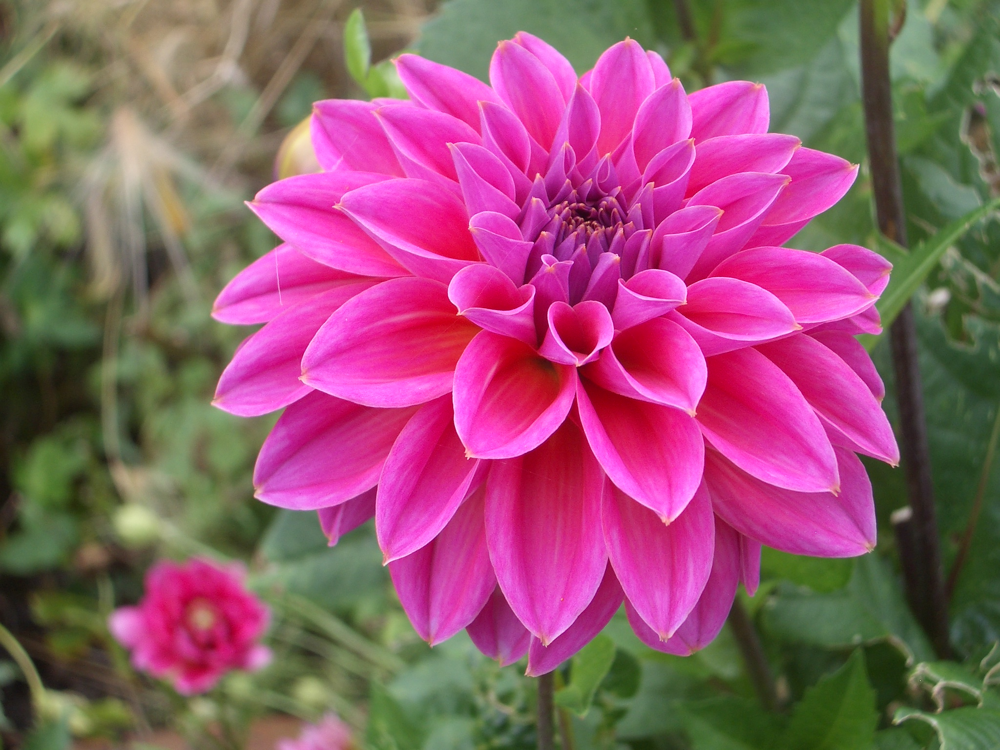
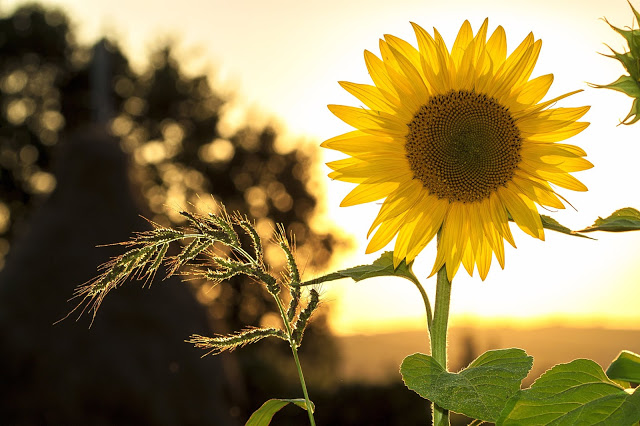

Flowers

Roses are literally the queen of flowers. We all love and appreciate their beauty. They send a strong message of love, possess a heavenly scent, and have breathtaking colors.But besides representing something pristine and lovely, roses can impart a lot of wisdom on us. Just as a rosebud opens up into a beautiful bloom under the right conditions, we should also find what we need to make our dreams flourish.

All dahlias are beautiful in their own way! I love them because they have the most perfect symmetry and come in a rainbow of color options.All dahlias are beautiful in their own way! I love them because they have the most perfect symmetry and come in a rainbow of color options.

Sunflowers are one of the most recognizable flowers. They have large brown centers and deep golden petals all around. But the thing that makes them the easiest to recognize is that they can grow over six feet tall. The large size of these flowers paired with the beautiful yellow petals makes them exquisite to look at if you happen to see a field of them.